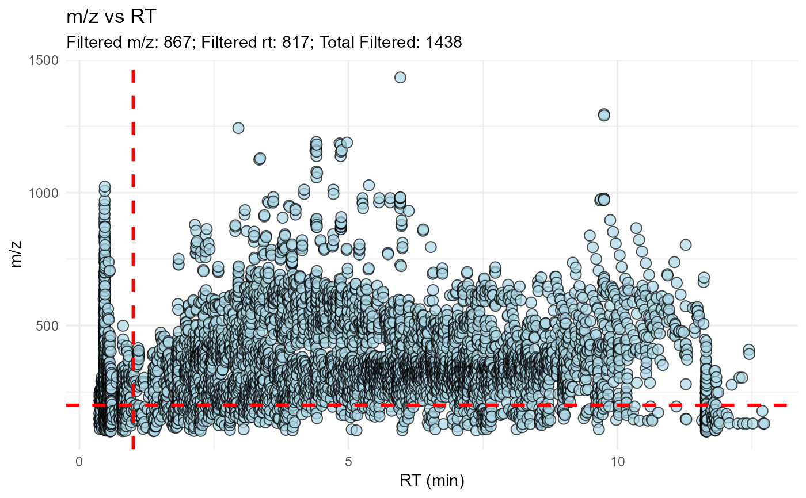

mc_plot_peak.RdVisualize the saved m/z, retention times, and mass defects.
mc_plot_peak(x, filters = NULL, interactive = TRUE, webgl = TRUE)A metabocensor_result returned by mc_prepare() or a filtering function.
Properties to display: mz, rt, rmd, or amd. NULL selects the corresponding filters used in the peak-filtering step. Target matching has no scatter plot.
TRUE returns an interactive Plotly figure. FALSE returns static ggplot output.
Use WebGL for interactive scatter traces. Ignored for static output.
Use an object after peak filtering. The m/z and RT selections share an m/z-versus-RT panel; RMD and AMD use additional panels. Saved values include removed features. Properties not used for filtering can still be displayed, without their cutoff lines. Static multi-panel output is named mzrt, rmd, and/or amd.
A Plotly object when interactive = TRUE; otherwise a ggplot object. When several static panels are needed, returns a named list of ggplot objects instead.
peak_file <- system.file(
"extdata", "orbi_iimn_gnps_quant.csv",
package = "MetaboCensoR", mustWork = TRUE
)
imported <- mc_prepare(
peak_file, type = "mzmine",
sample_keywords = c(".mzML", "Peak area")
)
# Illustration of peak filtering, not the published Orbi settings.
peak_options <- mc_peak_parameters(
mz_min_enable = TRUE, peak_mz_min = 200,
rt_min_enable = TRUE, peak_rt_min = 1
)
after_peak <- mc_filter_peak(
imported, filters = c("mz", "rt"), parameters = peak_options
)
mc_plot_peak(after_peak, filters = c("mz", "rt"), interactive = FALSE)
